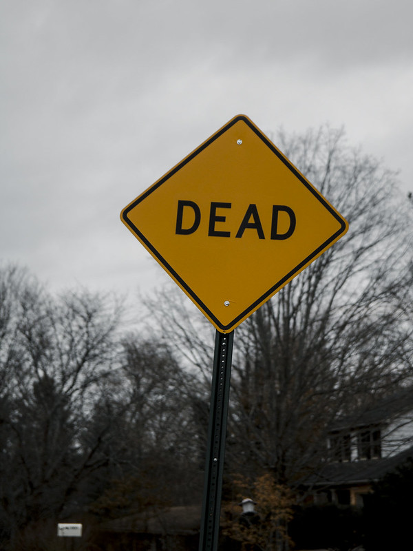

Chapter 3: The Mysterious House
Previous chapterOn Maple street...

Only some of the the houses have put Halloween decorations up and few of them have lights on. One large house is lit with garish zombie heads with blinking eyes which look spooky in the darkness. On one lawn, there is a sign saying "No trick-or-treaters!" All three kids walk close to each other and Cecilia is holding on to their turtle, Snap. Earlier they were all excited and curious but now they are all
"Maybe we should turn back?" Cecilia almost whispers. "It doesn't seem like we're gonna get a lot of sweets here. Besides, I don't like the scary decorations."
"Yeah... And look, that cottage looks like it's deserted", Marin whispers back pointing at a dark house on their left.
But before the others can respond, the leaves of the nearby hedge ruffle and rustle.
"There's someone there!", Cecilia screams. As they back off from the hedge they knock Mark over. What follows is ten seconds of utter chaos.
Mark is the first to recover. As soon as they do, they realise something's missing.
"Where is Snap?", Mark says sounding nervous and looking around.
"There! On the porch!" Cecilia cries out pointing at the house on their left. And sure enough, Snap is standing at the porch seemingly curious about the dark house. The front door is slightly open, and before the trio manages to even call for them, the cat steps into the doorway and disappears inside.
"Oh no....", Cecilia whispers, their face turning white. "This is not good..."
"We have to go after Snap, there's no other option", Marin says trying to sound brave but looking just as nervous as Cecilia. Scared they head towards the house...